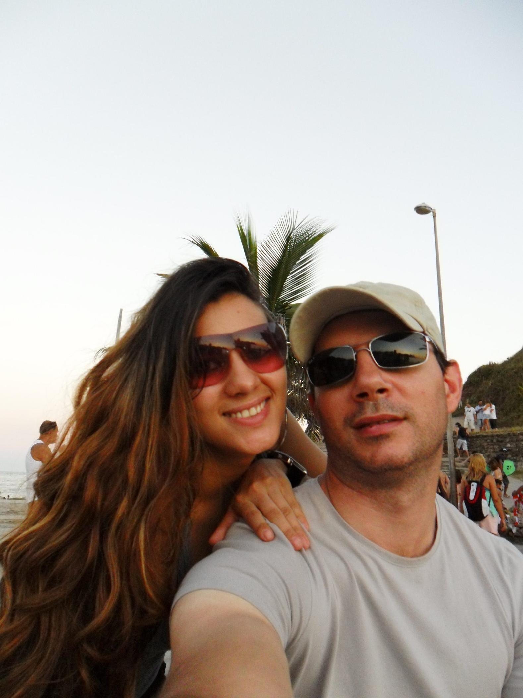
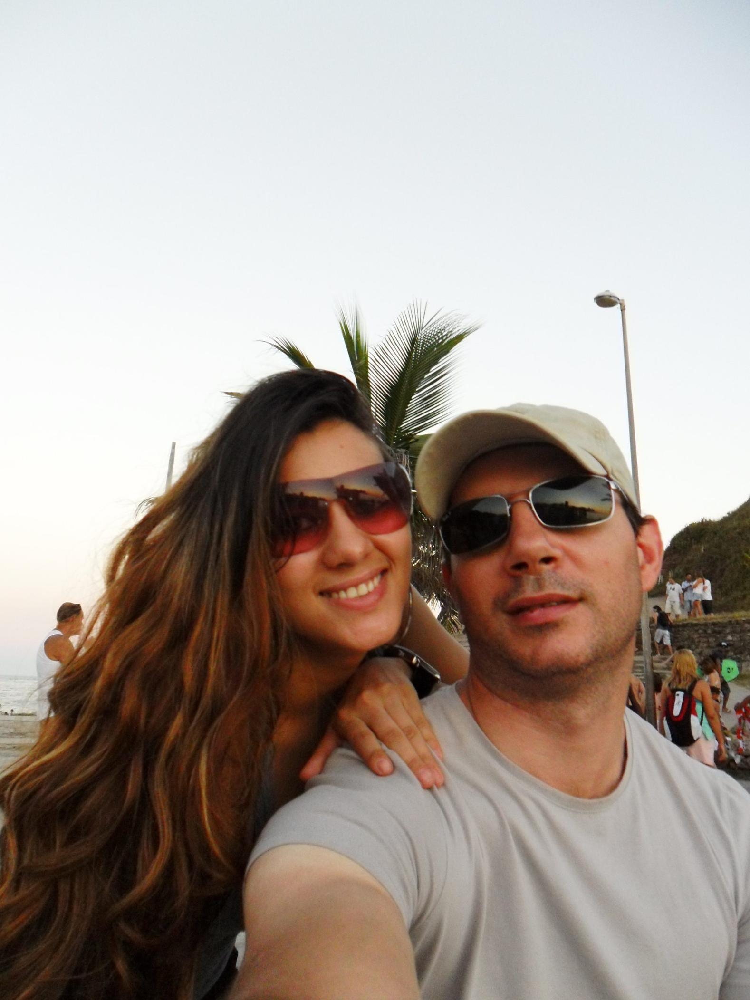

COOKING AUTHENTIC ITALIAN FOOD
I love cooking Italian food, using recipes passed down from generation to generation. It's fun teaching my kids to cook and it's a great way to detached from iPads and smartphones. My favorite dishes are pasta fagioli (pasta fasool), zuppa di pesce, and authentic meatballs made with a combination of veal, pork, and beef.


HOME REMODELING
I love tackling new remodeling projects. My specialty is designing kitchens. I usually use Ikea kitchens because you can't beat the quality at the sub $8,000 price range. The most fun is mixing and matching the countertops and backsplashes. I've done a range of countertops ranging from concrete to butcher block to slate tile set over cement board. I also love refinishing wood floors, which brings to life 100 year old floors and saving landfill space. I use a heavy floor sander and finish with tung oil, leaving a natural finish that's not plasticky like polyurethane.

TRAVELING
I love to travel to new places and meet interest folks. I lived in Norway for six months on a work project, met my wife in Rio de Janeiro, Brazil, and spent a week in Havana, Cuba doing absolutely nothing. I live traveling to offbeat locations like Serbia and Bratislava.
 
